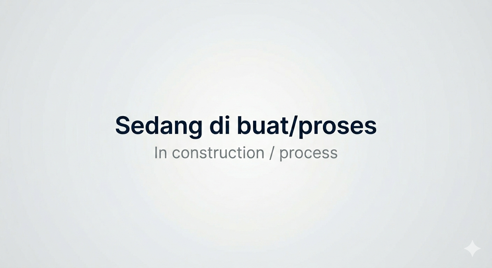
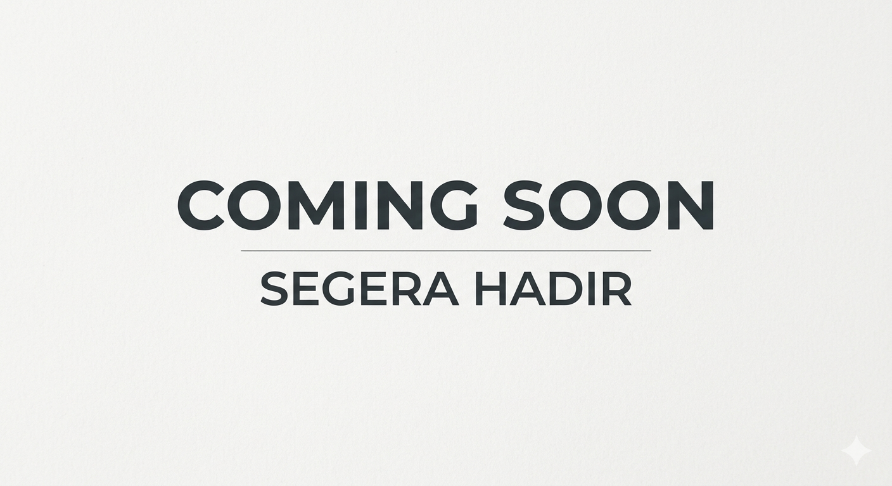

🛰️ Satelit
Blueprint satelit orbit bumi, teleskop luar angkasa, dan stasiun luar angkasa.

Hubble Space Telescope
Teleskop luar angkasa ikonik yang telah memberikan foto-foto terbaik alam semesta sejak 1990.
ISS — International Space Station
Stasiun luar angkasa internasional yang mengorbit bumi sejak 1998, rumah bagi astronot.
Satria-1
SATRIA-1 Satelit internet Indonesia untuk membawa koneksi cepat ke daerah terpencil dan wilayah 3T.

Starlink Satellite
Jaringan satelit internet SpaceX yang mengorbit rendah untuk layanan internet global.